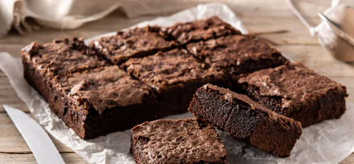

Brownie

Descrição
Veja como preparar um brownie simples e rápido.
Ingredientes
- 5 colheres de manteiga
- 3 xicara de achocolatado
- 12 colheres de farinha de trigo
- 3 ovos
- 6 colheres de açúcar
Modo de Preparo
- Derreta a manteiga e reserve
- Enquanto derrete a manteiga, misture os 3 ovos e a açúcar e misture bem
- Acrescente a manteiga derretida no ovo e o açúcar
- Agora é so misturar o achocolatado e o trigo
- Unte uma forma com manteiga e achocolatado
- Leve ao forno a 180° C por 30 minutos
Voltar